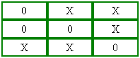
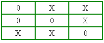
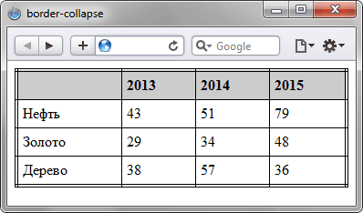

border-collapse
Устанавливает, как отображать границы вокруг ячеек таблицы. Это свойство играет роль, когда для ячеек установлена рамка, тогда в месте стыка ячеек получится линия двойной толщины (рис. 1а). Значение collapse заставляет браузер анализировать подобные места в таблице и убирать в ней двойные линии (рис. 1б). При этом между ячейками остаётся только одна граница, одновременно принадлежащая обеим ячейкам. То же правило соблюдается и для внешних границ, когда вокруг самой таблицы добавляется рамка.
|  |  |
| а | б |
Рис. 1. Вид таблицы при использовании свойства border-collapse
Краткая информация
| Значение по умолчанию | separate |
|---|---|
| Наследуется | Нет |
| Применяется | К элементу <table> или к элементам, у которых значение display установлено как table или inline-table |
Синтаксис
border-collapse: collapse | separateЗначения
- collapse
- Линия между ячейками отображается только одна, также игнорируется значение атрибута cellspacing.
- separate
- Вокруг каждой ячейки отображается своя собственная рамка, в местах соприкосновения ячеек показываются сразу две линии.
Пример
<!DOCTYPE html>
<html>
<head>
<meta charset="utf-8">
<title>border-collapse</title>
<style>
table {
width: 100%; /* Ширина таблицы */
border: 4px double black; /* Рамка вокруг таблицы */
border-collapse: collapse; /* Отображать только одинарные линии */
}
th {
text-align: left; /* Выравнивание по левому краю */
background: #ccc; /* Цвет фона ячеек */
padding: 5px; /* Поля вокруг содержимого ячеек */
border: 1px solid black; /* Граница вокруг ячеек */
}
td {
padding: 5px; /* Поля вокруг содержимого ячеек */
border: 1px solid black; /* Граница вокруг ячеек */
}
</style>
</head>
<body>
<table>
<tr>
<th> </th><th>2013</th>
<th>2014</th><th>2015</th>
</tr>
<tr>
<td>Нефть</td><td>43</td>
<td>51</td><td>79</td>
</tr>
<tr>
<td>Золото</td><td>29</td>
<td>34</td><td>48</td>
</tr>
<tr>
<td>Дерево</td><td>38</td>
<td>57</td><td>36</td>
</tr>
</table>
</body>
</html>Результат данного примера показан на рис. 2.

Рис. 2. Вид таблицы при использовании свойства border-collapse
Объектная модель
Объект.style.borderCollapse
Примечание
Internet Explorer до версии 8.0 не отменяет действие атрибута cellspacing.
Спецификация
| Спецификация | Статус |
|---|---|
| CSS Level 2 (Revision 1) | Рекомендация |
Браузеры
| Internet Explorer | Chrome | Opera | Safari | Firefox |
| 5 | 1 | 4 | 1.2 | 1 |
| Android | Firefox Mobile | Opera Mobile | Safari Mobile |
| 2.3 | 1 | 11 | 3 |